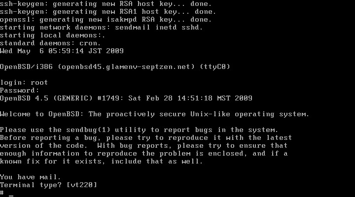
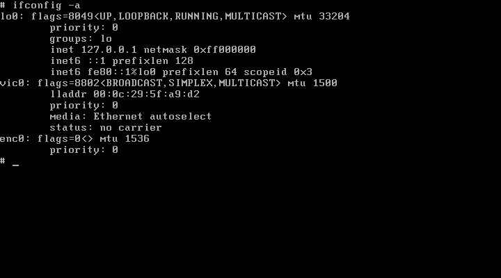

カテゴリ: BSD
WindowsXP上のVMware5で、OpenBSD4.5をインストールした記録。
仕事先でFreeBSDを使っている(といってもSSHでログインしてvimでファイル編集してるだけだけど)のと、個人的な興味でOpenBSDをインストールしてみることにしたので、とりあえずVMware5にインストールした時のメモ。
- OpenBSD本家
- OpenBSD FAQ 4 - OpenBSD 4.5 Installation Guide
インストールに必要なファイルのダウンロード
http://www.openbsd.org/ja/index.html
の「リリースを入手」をクリックし、適当な近場のサーバを選択する。今回は ftp.kddlabs.co.jp を利用させて貰った。
適当にアーキテクチャを選択(今回はi386)し、次の３ファイルをダウンロードした。
- floppy45.fs
- install45.iso
- INSTALL.i386
色々ファイルがあって迷いそうなのだけれど、普通のPC上で単純に全部入りでインストールするならこの組み合わせで問題ないはず。
流れとしては、
- floppy45.fs をフロッピーに書き込んでブートするとインストール用の最小限BSDシステムが立ち上がって、
- install45.iso をCD-ROMでマウントして、コピー元ファイルを読み込む。
という流れ。INSTALL.i386はインストールガイドとしてダウンロードしておいた。もし実際にインストールするのが物理マシンで、サーバ用の特殊なハードウェア(RAIDとか)を積んでいる場合はfloppyB45.fs, ノートPC系であればfloppyC45.fs を使え、とのこと。
本来なら、Windows上でrawrite, Linux上ならddコマンドで floppy45.fs をフロッピーディスクの物理メディアに書き込んだり、install45.iso をCD-Rで焼いたりする必要があるのだけれど、VMwareを使うので全部イメージファイルとして直接読み込ませた。
VMwareマシンの作成と調整
VMwareマシンの作成の時、ゲストOSは「その他」→「FreeBSD」を選択しておく。他は標準構成。HDDは実験で使うだけなので、3GB位にしておく。メモリは256MBもあれば充分。
最近のPCはフロッピーディスクがついてないので、仮想マシンの設定を編集して手動でフロッピーディスクを追加しておく。
インストールが終わったらフロッピーディスクは削除し、CDもISOファイルの設定をクリアしておきます。
インストールの様子
Web上やOpenBSD本家ドキュメント、乃至はINSTALL.i386などを参考に進めます。ディスクパーティションの設定以外は、難しい箇所はありません。訊かれるのはホスト名やキーボードタイプ、タイムゾーン、ネットワークカードの設定など、殆どのLinuxインストールと一緒です。ただインターフェイスがCUIなだけ。
インストーラ起動 - キーボードタイプの選択
ゲストマシンを立ち上げると、「boot> 」というプロンプトが出ます。数秒後、自動的に
(I)nstall, (U)pgrade or (S)hell?
というプロンプトが表示されて入力待ちになるので、「I」を入力してリターン。
キーボードタイプは"L"で一覧が表示されるので、一応「jp」を選択しました。
ディスクパーティションの構成
「本当に進めて良いですか？」と聞かれますので、今回は「yes」で進めます。

rootディスクの選択と、「全部OpenBSD用に使ってOK？」の確認です。ディスクは一つだけですし、他にOSは入ってないので全部OKで「yes」にしておきます。
"a"コマンドでディスクラベルを追加します。本来は "/", "/tmp", ... といくつか分けた方が良いらしいのですが、今回は実験ですのでまとめて "/" 一つだけにしました。マウントポイント以外は全部デフォルト値でリターンです。
"w"コマンドで実際にパーティション情報を物理ディスクに書き込み、"q"でディスクラベルエディタを終了します。「ハードディスク初期化しちゃってOK？」と訊かれてきますので、"yes"を入力。
ネットワーク構成 - rootパスワード設定
ディスク初期化が終わればNW構成です。VMware上のマシンはブリッジ接続で固定IP(192.168.250.xxx)を割り振っているので、幾つかを手動設定します。
インストールセットの選択(CDから) - ファイルコピー
インストールセットをどこから取得するか訊かれてきます。今回はCDからなので、適当に選択していきます。
インストールセットの組み合わせですが、取りあえず全部入りが欲しいです。"all"で全選択して・・・
"-bsd.mp"でマルチプロセッサ用のカーネルだけ外しておきます。(ゲストOSはシングルCPUで構成したので)
最後に"done"すれば「準備OK？」と訊かれるので、リターンキー。
一通り終わると、他にインストールセットは無いか訊かれます。デフォルトが"done"になってるのでそのままリターンキー。
SSH, NTPDの設定 - タイムゾーンの設定
引き続きSSH, NTPD, XWindowSystem, デフォルトコンソールの切り替え設定を行います。
今回は全てデフォルトにしてあります。(SSHは起動、NTPDは停止、Xは未設定、デフォルトコンソールのシリアルポート(COM0)への切り替えは無し)
この後タイムゾーンの設定になります。"?"でリスとされます。"Asia/"のように末尾にスラッシュがついている場合は、"Asia"とまで入力してリターンすると、サブタイムゾーンの指定が行えます。
今回は"Asia/Tokyo"を選択します。
CONGRATULATIONS!!
このまま"halt"コマンドで停止します。ゲストOSについては手動でPowerDownさせる必要があります。

再起動後ログイン
ゲストOSが停止している間に、フロッピーディスクの設定を削除します。またCD-ROMドライブも、ISOイメージの設定をクリアしておきます。
ゲストOSを起動すると、めでたくログインプロンプトが表示されました。
ログイン成功です！

アフターケア
VMware Server の場合のvmware-toolsのインストール
VMware Workstation を使ってますので今回は試しませんでしたが、VMware Serverの場合は、FreeBSD用のVMwareToolsをインストールできるようです。
OpenBSDにはFreeBSDのバイナリを実行できるエミュレーション機能がある(デフォルトOFF)ので、これを使ってvmware-guestd をシステム起動時にバックグランド実行させるようです。
参考：
- OpenBSDをVMware Serverにインストールする裏技 - SourceForge.JP Magazine
- Install VMWare tools - OpenBSD-Wiki
インストール後、ネットワークが繋がらない場合
実は今回のインストールがそうだったのですが、インストール終了後システムを再起動すると、ネットワークが繋がらない現象が発生しました。デフォルトGWにpingを打っても通らない状況です。
ifconfigコマンドで確認してみると、インストール時には"pcn0"というインターフェイスが利用可能でしたが、リブート後は"pcn0"が無くて代わりに"vic0"というインターフェイスが存在しています。

"/etc/hostname.pcn0" は存在していますが、上手く起動出来なかったようです。手動でifconfigを実行しても、エラーになります。
# ifconfig pcn0 inet 192.168.250.150 netmask 255.255.255.0 ifconfig: SIOCDIFADDR: Device not configured
インターフェイス名を"vic0"にすれば正常に設定できます。
# ifconfig pcn0 inet 192.168.250.150 netmask 255.255.255.0
# ifconfig -a
lo0: flags=8049<UP,LOOPBACK,RUNNING,MULTICAST> mtu 33204
priority: 0
groups: lo
inet 127.0.0.1 netmask 0xff000000
inet6 ::1 prefixlen 128
inet6 fe80::1%lo0 prefixlen 64 scopeid 0x3
vic0: flags=8843<UP,BROADCAST,RUNNING,SIMPLEX,MULTICAST> mtu 1500
lladdr 00:0c:29:5f:a9:d2
priority: 0
media: Ethernet autoselect
status: active
inet6 fe80::20c:29ff:fe5f:a9d2%vic0 prefixlen 64 scopeid 0x1
inet 192.168.250.150 netmask 0xffffff00 broadcast 192.168.250.255
enc0: flags=0<> mtu 1536
priority: 0
調べてみると、vicというのはOpenBSD用に作られたVMware用のデバイスドライバのようです。
# man 4 vic
- Manual Pages: vic(4)
なぜインストール時に"pcn0"で認識されていたのが、リブート後"vic0"になったのかは分かりません。
本質的な解決ではありませんが、インストール時に作成された "/etc/hostname.pcn0" を "/etc/hostname.vic0" にリネームすることで、今後も起動時に正常にTCP/IP NWインターフェイスが立ち上がるようになりました。
ただ、上記manページにはゲストOSの設定ファイル(.vmx)に
ethernet0.virtualDev = "vmxnet"
と設定しなければいけないとか書かれていますが、特にそんなエントリ書いてないんですよね・・・。謎。
とりあえずVMware5上でインストールした時、インストール時は"pcn0"で設定したのにリブート後何故か"vic0"と表示されてIPv4のアドレスが設定できない場合は試してみて下さい。